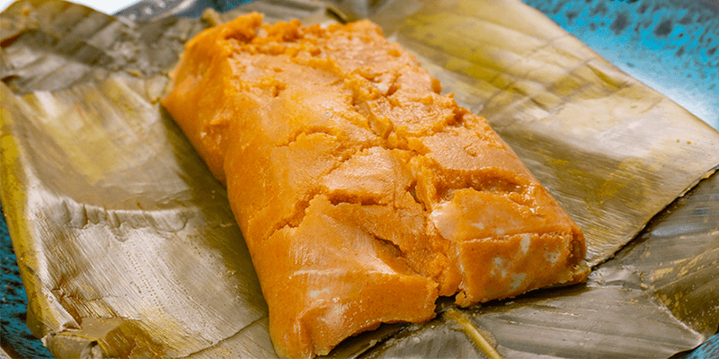

Platillo contundente
Los paches

Los paches son una receta muy apreciada en Guatemala y con el paso del tiempo se han adaptado a distintos departamentos, conservando siempre su caracter casero y reconfortante.